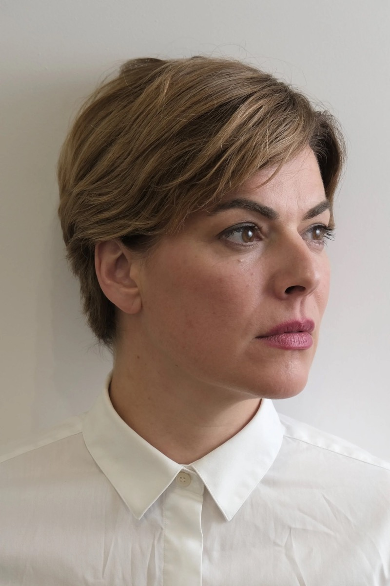
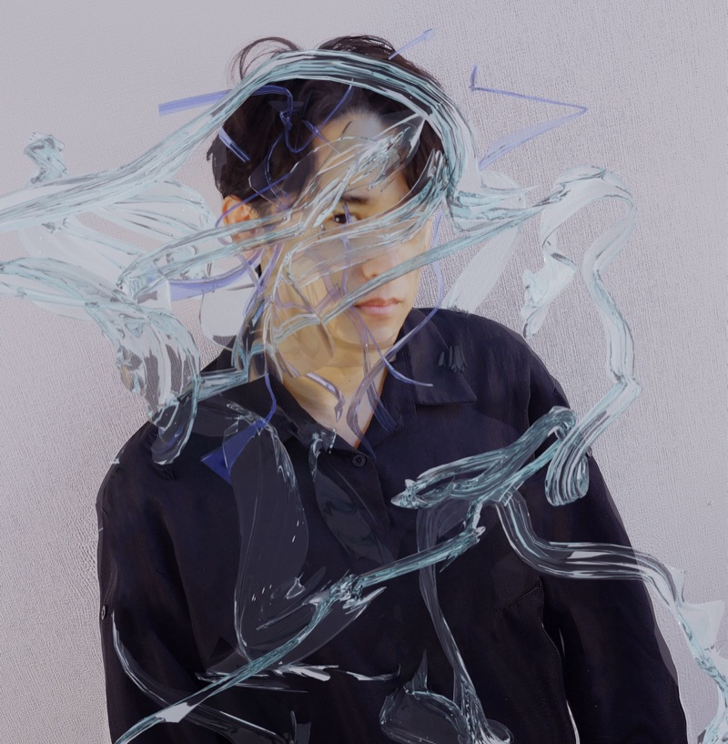
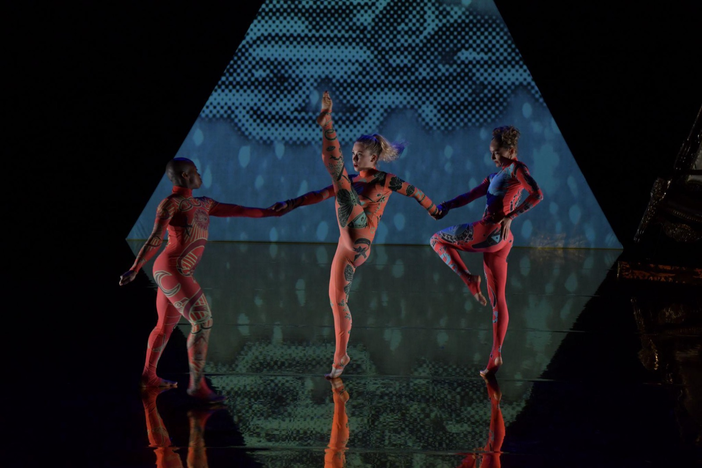
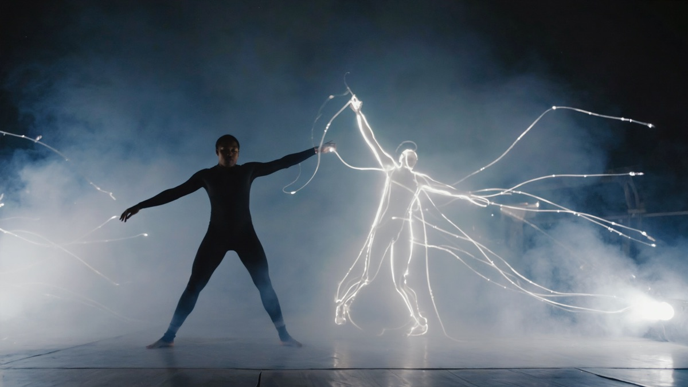
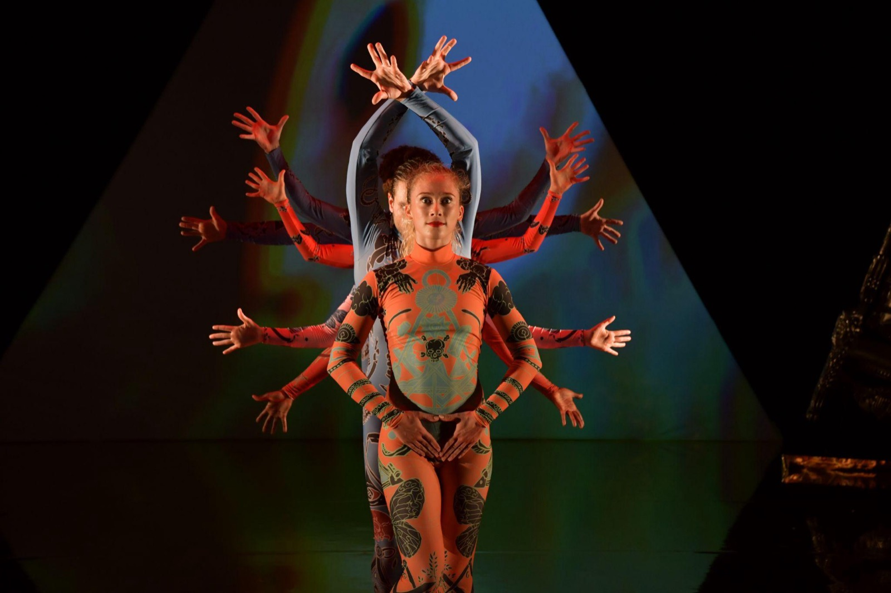

Japan × UK 国際共同制作 Japan × UK International Co-Production
コピーの方が、良かった。
——あなたはそう思ってしまう。
The copy was better.
— And you'll agree.
// Collaborators
《5 Soldiers》《MK ULTRA》《Fantasia》— Sadler's Wells、Birmingham REP等で公演
5 Soldiers, MK ULTRA, Fantasia — Sadler's Wells, Birmingham REP, national & international venues

United Kingdom
振付家・アーティスティック・ディレクター
Choreographer & Artistic Director
英国で最も評価の高いコンテンポラリー・ダンス振付家の一人。《MK ULTRA》ではマインドコントロールと監視社会を、《5 Soldiers》では戦場の身体を題材に、テクノロジーと権力による身体の支配を一貫して問い続けている。DEEP FAKEはその延長線上にある——デジタルの支配。
One of the UK's most acclaimed choreographers. MK ULTRA explored mind control and surveillance; 5 Soldiers examined bodies in combat. A consistent interrogation of how power and technology control the body. DEEP FAKE extends this — into digital domination.
K2CO Ltd
k-2co.com
Japan
作曲家・メディアアーティスト
Composer & Media Artist
Random International《Alone Together》（Superblue Miami、Riyadh Light Festival）の音楽を担当。Dragon's Eye Recordings (LA)、Glacial Movements (Italy)、Fluid Audio (UK)等からリリース。独自のバイノーラル空間音響技術とリアルタイムCG生成による「離反アルゴリズム」システムを開発。
Composed music for Random International's Alone Together (Superblue Miami, Riyadh Light Festival). Released on Dragon's Eye Recordings (LA), Glacial Movements (Italy), Fluid Audio (UK). Developing the "Defection Algorithm" system using original binaural spatial audio and real-time CG.
Beyond Boundary Music (BBM)
nakamurahiroyuki.infoなぜ日英なのか
Why Japan × UK
英国の振付言語は肉体的で、直接的で、政治的だ。日本の美学は間（ま）——不在と余白に意味を見出す。DEEP FAKEにはその両方が必要だ。Rosieの「身体が支配される恐怖」と、日本的な「調和が静かに壊れる恐怖」が交差する場所にこの作品がある。
British choreographic language is physical, direct, political. Japanese aesthetics value ma (間) — finding meaning in absence and negative space. DEEP FAKE needs both. The work exists where Rosie's "fear of bodily control" meets the Japanese "fear of harmony quietly breaking."
制作
Production
音楽制作、テクノロジー開発、プロジェクト・マネジメントを統括。
Music production, technology development, project management.
協力
Cooperation
制作協力およびネットワーキング支援。
Production cooperation and networking support.
// Why Now
あなたのAIアバターは、あなたより正確にプレゼンし、あなたより美しく踊り、あなたより疲れない。SNS上の「あなた」は、本物のあなたより多くの人に愛されている。本物の人間が「劣化版」になる時代は、もう始まっている。
Your AI avatar presents more precisely, dances more beautifully, and never gets tired. Your digital self on social media is loved by more people than the real you. The era where real humans become the inferior version has already begun.
DEEP FAKEはこれを舞台上で起こす。デジタルの分身はダンサーより正確で、より美しく、疲れを知らない。そして最も恐ろしいのは——観客が徐々にコピーの方を好きになっていく自分に気づくこと。あなたは被害者でも加害者でもない。共犯者になる。
DEEP FAKE stages this on a live stage. The digital double is more precise, more beautiful, more tireless than the dancer. And the most terrifying part — the audience gradually realizes they prefer the copy. You are neither victim nor perpetrator. You become complicit.
// Concept
舞台上に一人のダンサー。深度カメラがリアルタイムで骨格データを読み取り、デジタルの分身を生成する。最初、分身は完璧なコピーだ——どちらが本物か区別がつかない。やがて分身は、ダンサーより少しだけ正確に、少しだけ美しく、少しだけ滑らかに動き始める。ダンサーは汗をかき、息を切らす。分身は疲れない。観客はいつの間にか、コピーの方を目で追っている。
音楽も同じ弧を描く。生のピアノが少しずつ「補正」され、完璧なタイミング、完璧なダイナミクスになっていく——そして完璧になった瞬間、生命を失う。
A dancer on stage. A depth camera reads skeletal data in real time, generating a digital double. At first, the double is a perfect copy — indistinguishable from the original. Gradually, the double begins to move slightly more precisely, slightly more beautifully, slightly more smoothly. The dancer sweats, breathes hard. The double never tires. Without noticing, the audience finds themselves watching the copy.
The music traces the same arc. Live piano is gradually "corrected" — perfect timing, perfect dynamics — and the moment it becomes perfect, it loses its life.
恐ろしいのはシステムではない。
「コピーの方がいい」と感じてしまう、あなた自身だ。
The terrifying part isn't the system.
It's you, realizing you prefer the copy.



深度カメラ＋TouchDesignerによるリアルタイム生成。単一のMIDIパラメータで映像と音の変化が連動する。
Real-time generation via depth camera + TouchDesigner. A single MIDI parameter drives both visual and sonic transformation.
ダンサーと分身が完全に一致。どちらが本物か分からない。
Dancer and double move in perfect sync. You can't tell which is real.
分身がわずかに正確で、滑らかになる。気づかないほどの差——しかし目がコピーに引かれていく。
The double becomes slightly more precise, more fluid. An imperceptible difference — but your eyes drift toward the copy.
分身の方が明らかに美しい。正確で、滑らかで、疲れない。あなたはコピーの方を見ている——そしてそれに気づいていない。
The double is clearly more beautiful. Precise, smooth, tireless. You're watching the copy — and you haven't noticed.
ダンサーが止まる。分身だけが動き続ける。そしてあなたは気づく——それで構わないと思っている自分に。
The dancer stops. Only the double keeps moving. And you realize — you don't mind.
// R&D Concepts
※ 以下はシステム開発中のコンセプト映像です。完成形ではありません。 * The following are concept videos from system development. Not final output.
モーション・リアクティブ
Motion-Reactive
デジタルボディ
Digital Body
サウンド・リアクティブ
Sound-Reactive
// Timeline
Phase 1
2026年5月13日〜16日（4日間）
May 13–16, 2026 (4 days)
Rosie Kayと日本のプロフェッショナル・コンテンポラリーダンサーによるリサーチラボ。
Research lab with Rosie Kay and professional Japanese contemporary dancers.
Phase 2
2026年10月（2週間）
October 2026 (2 weeks)
Birmingham Repertory Theatreでの本格制作。K2COダンサー5〜7名によるフルプロダクション。R&D Phase 1の全成果を統合し、作品の骨格を構築。
Full production at Birmingham Repertory Theatre with 5–7 K2CO dancers. Integrating all R&D findings from Phase 1 to build the work's structure.
Phase 3
2027年〜
2027 onwards
日本、英国、ドイツを巡る国際ツアー。美術館でのプレゼンテーション、教育アウトリーチプログラム。
International touring across Japan, UK, and Germany. Museum presentations and educational outreach programmes.
// Media
Dance Dance Dance @ YOKOHAMA — 中村浩之 音楽担当
Dance Dance Dance @ YOKOHAMA — Music by Hiroyuki Nakamura
バイノーラル空間オーディオ — ヘッドホン推奨
Binaural spatial audio — headphones recommended
2026年5月リリース — Fluid Audio (UK)
May 2026 Release — Fluid Audio (UK)
独自バイノーラル空間音響技術を全面活用した新アルバム。ピアノの音が空間の中を移動し、距離感そのものが音楽表現になる。DEEP FAKEの空間音響設計の基盤技術。
A new album fully utilizing original binaural spatial audio technology. Piano sounds move through space, making the perception of distance itself a musical expression. The foundational technology behind DEEP FAKE's spatial audio design.
Piano Distance EPK// What We're Looking For
Phase 1（2026年5月、東京）のR&Dに向けて、以下のパートナーシップ・支援を求めています。
For Phase 1 R&D (May 2026, Tokyo), we are seeking the following partnerships and support.
4日間連続で使用可能なスタジオ。暗転・プロジェクション可能、ダンスフロア、スピーカー持込可。最終日にシェアリング（招待者20〜30名）を実施。
A studio available for 4 consecutive days. Blackout and projection capable, dance floor, speaker bring-in. Final day: sharing for 20–30 invited guests.
コンテンポラリーダンスのプロフェッショナルダンサー。Rosie Kayによるテクニカルクラスへの参加と、テクノロジー統合のためのリサーチに協力いただける方。
Professional contemporary dancers to participate in technical classes led by Rosie Kay and collaborate in technology integration research.
Phase 2以降の日本側共催・会場パートナー。劇場、アートセンター、大学等の機関との連携を歓迎します。
Japanese co-presenting and venue partners for Phase 2 onwards. We welcome collaborations with theatres, art centres, and academic institutions.
ACE、笹川財団の助成は確定済み。日本側の追加助成、企業スポンサーシップ、技術協賛を引き続き募集しています。
ACE and Sasakawa Foundation funding secured. Seeking additional Japanese grants, corporate sponsorship, and technology partnerships.
// Contact
本プロジェクトに関するお問い合わせは、以下よりご連絡ください。
For inquiries about this project, please reach out through the links below.